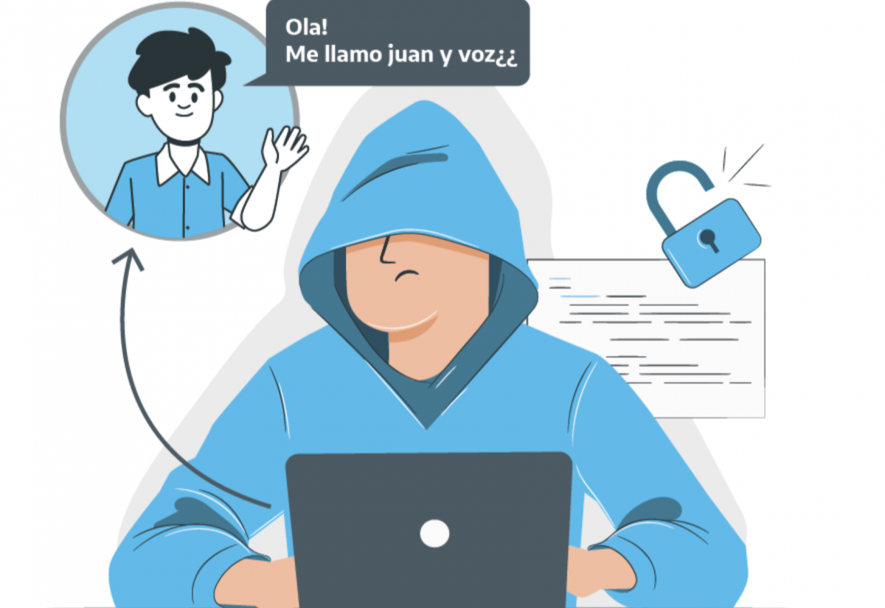
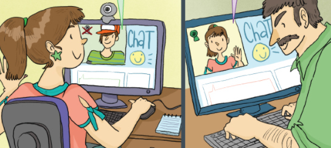
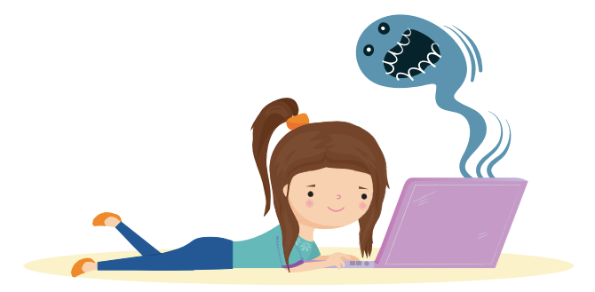

¿QUE ES EL GROOMING?
El Grooming es el acoso sexual de una persona adulta a un niño o un adolescente por medio de Internet. Las personas que realizan grooming se llaman groomers o acosadores.
LA LEY CONTRA EL GROOMING
Desde diciembre del 2013 se incorporó el grooming como delito al Código Penal. El artículo 131 establece una pena de prisión de 6 meses a 4 años.
Artículo 131: “Será penado con prisión de seis (6) meses a cuatro (4) años el que, por medio de comunicaciones electrónicas, telecomunicaciones o cualquier otra tecnología de transmisión de datos, contactare a una persona menor de edad, con el propósito de cometer cualquier delito contra la integridad sexual de la misma.”
¿CÓMO ACTÚA LA PERSONA ACOSADORA?
El acosador crea un perfil falso en redes sociales o videojuegos, haciéndose pasar por un menor para ganar la confianza de niños y adolescentes.
Una vez establecida la relación, solicita fotos o videos sexuales y chantajea a la víctima, amenazando con hacer público el material si no envía más o no acepta un encuentro.
Este abuso de poder se ve reforzado por la adultez del acosador y la vergüenza que siente la víctima. A veces, el acosador obtiene contenido sexual mediante el robo de contraseñas o hackeo, iniciando el chantaje sin necesidad de contacto previo.

¿COMO GANA CONFIANZA EL ACOSADOR?
La persona acosadora utiliza varias estrategias, como hacerse pasar por menor de edad con fotos o videos falsificados, crear múltiples perfiles falsos y adaptar su lenguaje para generar confianza.
Aprovecha la información que los niños o adolescentes comparten en redes sociales y juegos en línea para obtener datos personales.
Con el tiempo, el acosador fortalece el vínculo, logrando que el niño o adolescente olvide que está interactuando con un desconocido.

¿CÓMO DETECTAR EL GROOMING?
El grooming ocurre cuando un adulto busca una relación inapropiada con un menor, generalmente en línea.
Se identifica por interacciones excesivas, intentos de aislamiento, regalos, preguntas invasivas o comentarios sexuales y sugerencias de encuentros en persona. Es crucial estar atento a estas señales para proteger a los niños.
COMO PREVENIR EL GROOMING
Si quieres prevenir el grooming puedes seguir algunls de estos consejos clave:
- Hablar abiertamente con los niños sobre los peligros de internet y cómo identificar comportamientos sospechosos.
- Configurar la privacidad en redes sociales y aplicaciones, asegurándose de que solo amigos o familiares cercanos puedan contactar al menor.
- Supervisar el uso de dispositivos y mantener un control sobre las actividades en línea, especialmente en plataformas de mensajería y juegos.
- Fomentar la comunicación constante, animando a los niños a compartir cualquier interacción incómoda o extraña que tengan en línea.
Aunque existen más medidas de prevención, estos consejos son algunos de los más efectivos para proteger a los menores.
ANTE UN CASO DE GROOMING
En caso que le ocurra al niño o al adolescente:
- Evitar avergonzarlo o culparlo para que pueda contar con sinceridad lo que le pasó y acompañarlo con afecto con el objetivo de protegerlo;
- Comprender que el niño o el adolescente estaba siendo amenazado y tuvo que responder a los mensajes para proteger su privacidad;
- Con los datos intercambiados entre la persona acosadora y el niño o el adolescente: Reunir toda la información y hacer la denuncia en la fiscalía más cercana;
- Guardar las conversaciones, las imágenes y los videos que la persona acosadora y la víctima se enviaron porque sirven de prueba.
- Limitar la lista de contactos y configurar la privacidad en las redes sociales. Hablar con el niño o el adolescente sobre la importancia de incluir en la lista de contactos solo personas conocidas.
Ante un caso de grooming, es fundamental actuar rápidamente: hablar con la víctima, denunciar a las autoridades, bloquear al acosador y guardar pruebas. Estos pasos son esenciales para proteger a los más jóvenes y evitar que sigan siendo manipulados.